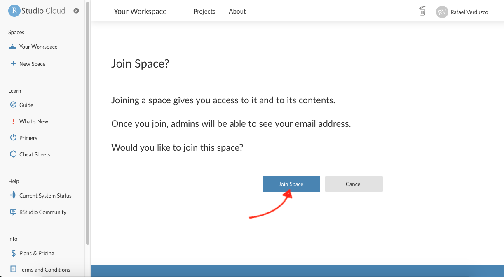

Introduction to R
For this course we will be using R (R Core Team 2021) and R Studio as the main tools for conducting quantitative analysis. R and the basic versions of R Studio are open-source and thus free software. Even though R appeared in the early 90s, it has been gaining a lot of popularity in recent years. In fact, it is now one of the most common software for doing statistics in academia.
R and R Studio are two separate things. R is the actual programming language and the main processing tool which does the computations in the background, whereas RStudio integrates all functionalities in a friendly and interactive interface. In short, for this course (and most of the times in practice) you chiefly RStudio whilst R is silently doing all the work in the background. Thereafter, we will refer to R, as the integrated interface.
R works in a command-based line environment. This means that you need to call the commands (or functions, as called in R) through text. This can look intimidating at first glance. But do not worry, we will guide you step by step.
At this point you may be wondering why you need to bother learning these tools. In the next section you will see some of the advantages and examples that can be achieved using R.
Why R?
R: a flexible tool
R can be applied in a wide variety of fields and subjects, including not only those in the social sciences (e.g. sociology, politics or policy research), but also in humanities (e.g. history, digital humanities), natural and physical sciences (e.g. biology, chemistry or geography), health (e.g. medical studies, public health, epidemiology), business and management (e.g. finance, economics, marketing), among many others.
The broad application of R is due to its flexibility which allows to perform a range of tasks related to data. These cover tasks at initial stages, such as downloading, mining, or importing data. But it is also useful to manipulate, edit, transform, and organize information. Furthermore and most important for us, there are a set of tools that allow us to analyse data using a range of statistical techniques. These are useful to understand, summarize and draw conclusions about samples, e.g. people. Lastly, R is powerful to communicate and share information and documents. There are several extensions (called packages in R) that can help to produce static and interactive plots/charts, maps, written reports, interactive applications or even entire books! In fact this workbook was written from RStudio.
Advantages of using R
Some of the advantages of using R are the following:
- It is free and open source. You do not need to pay for a license. Thus you can use it anywhere at anytime even if you do not have an affiliation to an institution or organization (e.g. University or workplace);
- It is a collaborative project. This means that it is the users who maintain, extend and update its applications;
- It is reproducible. Research can be more transparent since you will get the same results every time you run your analysis through a specific pathway (i.e. through scripts);
- High compatibility. You can read and produce most types of file extensions;
- There are a number of easy-access web resources to support you in the learning process.
Getting started
Setting up RStudio
At this point, you need to know that there are at least two alternatives to start using RStudio. One, and by far the most common, is to download both R and RStudio and install the applications in your local drive. The other option is RStudio Cloud. This is an on-line version of RStudio that does not require installing any additional software. You can run it directly from your browser (e.g. GoogleChrome, Safari, Firefox, etc). For now, we will use the cloud version.
To get started, follow the next steps:
Part 1 Create an RStudio Cloud account
- Click on this link RStudio Cloud - SSO, which should automatically open a new tab in your web browser or go directly to the browser and copy this URL: https://sso.rstudio.cloud/glasgow;
- Enter your University of Glasgow email address in the login page as normal;
- Then it gets linked to the SSO sign-in page, which you input your GUID and password (same page as if you’re logging into the library portal/e-reading list);
- Done! You will be taken you into your own Rstudio Cloud work space.
Part 2 Join your lab group
- You will receive a link from your tutor to join your lab group on RStudio Cloud (the link will be posted on Moodle too). N.b. you must use this specific link to join and access your lab group workspace, as each link is unique to your group. So only use your group’s specific link. Copy and paste the link in your web browser. You should see the following window:

- Join your lab by clicking on the ‘Join space’ button shown above.
- Open the shared space form the left-hand side pane called ‘Quants Lab Group..’ and start the Lab 1 project by clicking on the ‘Start’ button as shown below:
RStudio environment
RStudio screen
Once you have started ‘Lab 1’ you will see the screen below:
Now, go to the “File” tab and create a R Script as follows File > New file > R Script
Once you have created your first R Script, save it by clicking on File > Save as.. > [write the name of your file].
After this, your RStudio screen will be split in four important windows or panes as shown below:
- In Pane 1, you have your newly created
Rscript. This is the area where you will be working most of the time. From here, you will write functions. To run anRscript line, you can click on theRungreen arrow situated on the top of pane 1 or more commonly you can run a code line by typingalt + enter. The things you write in this section will be saved in your R script file.
- In Pane 2, you have the “Global Environment”, this is one of the most useful tabs in this pane. It shows you the active ‘objects’ that you have available/loaded in your current session (this will probably make more sense in the coming sections).
- In Pane 3, you have the R Console, this is where you will see most of the results of the functions you run from your script (pane 1). You can also write and run functions from here, by typing the function and hitting enter. NOTE that what you do here will NOT be saved, this is usually used to quickly call functions that you do not want to save in your script.
- Finally, in Pane 4 you have multiple useful tabs. In the
Filetab you can see the files and directories that you have in your R project. In thePlottab you will see a preview of the static plots/charts you will be producing from your script. InPackages, you have a list of the extensions or plug-ins (called ‘packages’ in R) that are installed in your working environment. TheHelpcontains some resources that clarify or expand what each of the functions does. Again, probably this will make more sense once you get started. We will come back to this later. Finally, theViewerdisplays interactive outputs.
Hands on R
Now you are ready! It is your turn to start exploring and getting familiar with R by completing the following activities.
R as calculator
Go to your console (pane 3, bottom-left pane), write some simple calculations and run them by typing ‘enter’ after each of them, as shown below.
Try different operations such as 50 / 20 or 3 * 5.
Fairly simple, right? And don’t forget, it is entirely normal to copy/paste and tweak any existing codes. Unlike writing an essay or an exam, you don’t actually need to know and write codes “off the cuff” or recite/memorise any syntax. You are only expected to know how to run the codes and tweak them as you go along, there is a huge amount of trial and error when you work in R. So don’t worry if you feel like you are just making minor changes to the codes, that’s how it’s supposed to work, and the first few weeks is all about getting comfortable in using R, then the level of challenge will go up. Let’s continue with the next activities!
Testing logical operators
Now, write and run the following lines in your console (pane 3) and take some time to observe the result in detail for each of them:
10 == 1010 != 101 == 51 > 5'a' == 'a''a' == 'b'
What do you see? …
…That’s it! When you use the double equal sign == you are asking R whether the value on the left hand-side of the operator is equal to the one on the right hand-side. Likewise, when you combine the exclamation mark ! with other operator, you get the reversed result. In the past exercises you used !=, this was interpreted as “is not equal to”, that is why 10 != 10 returns FALSE, but 10 == 10 returns TRUE.
R can process different classes of inputs. In this case we used letters and we asked R whether ‘a’ was equal to ‘a’, and of course the result is TRUE. Note that when you want to input text (referred as character values in R), you need quotation marks '. If you want to enter numeric values, you simply input the raw number. These are different ‘class’ values.
Perhaps logical operators do not make much sense at this point, but you will find out later that they are useful to manipulate data. For example, these are essential to filter a data set based on specific rules or patterns.
Assigning values to ‘objects’
In R, it is very common (and practical) to store values or data as ‘objects’. These are temporally stored in your current session. Let’s try it!
Now, we will work in the R script file (Pane 1, top-left pane), write the following and run it by clicking the green arrow or using alt + enter:
a <- 10
a + 5What do you observe?…
…That’s right! The operator <- assigned the numeric value 10 to the object a (on the left hand-side of the arrow). Later, you used the object (a) to compute a sum (i.e, a + 5).
Now, write and run the following in your R script (Pane 1)
c <- 3
a * cAs you can see, you stored the numeric value 3 in the variable c. Then, you called the previously created object a in a multiplication.
In the same way as you assigned these simple variables, you will store other types of objects later, e.g. vectors, data frames or lists. This is useful because those objects will be ready in your session to do some computations.
There are a few things to note when assigning objects to variables. If you use a different value to the same variable, e.g. by typing a <- 5, you will replace the old value with the new. So, instead of having a representing the value 10, you will have 5. You can see the objects available in your session on the Global Environment (‘Environment’ tab in Pane 2) as shown below.
This is a very good start, great job!
Note that the changes made in your script are saved automatically in RStudio Cloud. To verify this, have a look at the name of your script in the top-left of pane 1. If changes are due to be saved, the name will be written in red. If it is in red, save changes manually by clicking on the disk icon. After you have made sure your changes are saved, end your session simply by closing the RStudio Cloud tab in your browser.
Activity
Discuss the following questions with your neighbour or tutor:
- What are the main differences between working on a
Rscript file (pane 1) and directly on the console (pane 3)? - Can you describe what happens when your run the following code? (tip: look at the environment tab in pane 2)
object1 <- 10
object1 <- 30References
R Core Team. 2021. R: A Language and Environment for Statistical Computing. Vienna, Austria: R Foundation for Statistical Computing. https://www.R-project.org/.